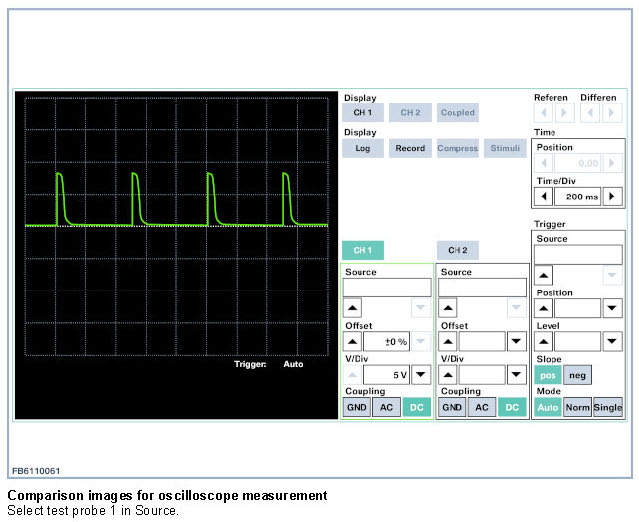

Passenger's Airbag Deactivation
Passenger's Airbag Deactivation
If a child's seat is fitted on the front passenger's seat, the front passenger's airbags must be disabled. On EU vehicles, disabling is by means of an airbag switch. On US vehicles, disabling is automatic by means of seat occupation detection.
Indicator lamp for passenger airbag deactivation
The indicator lamp is activated and lights up when the front passenger's airbag is disabled. The indicator lamp is monitored by the airbag control unit. If a fault in the power supply or lamp is determined, a fault code memory entry is made in the airbag control unit and the airbag warning lamp in the instrument cluster is activated.
Switch for passenger's airbag deactivation (EU version)
The airbag switch can only be activated/deactivated by means of the ignition key when the vehicle is stationary and the door is open.
The airbag switch
- is designed as a two-wire Hall switch.
- is supplied with voltage by the airbag control unit.
- is permanently monitored by the airbag control unit while the vehicle is being driven.
The passenger's airbag deactivation switch is supplied with clocked voltage by the airbag control unit. The following shows the voltage curve that is measured at the airbag control unit when the voltage curve is OK. For the voltage measurement, the adapter lead must not be connected to the passenger's airbag deactivation switch.

NOTE: Never perform any work on the airbag unless the vehicle battery has first been disconnected.Always ensure that the battery is disconnected before connecting or disconnecting the plugs for the airbag control unit, sensors or gas generators.The airbag control unit contains vehicle-specific data and must be encoded prior to operation.Removal and installation in other vehicles is strictly prohibited.